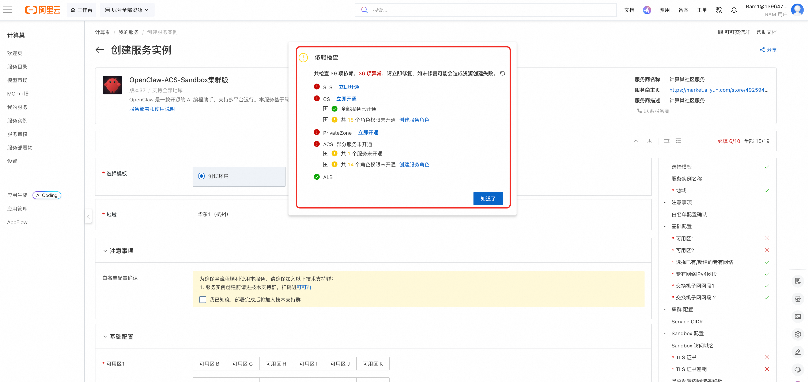
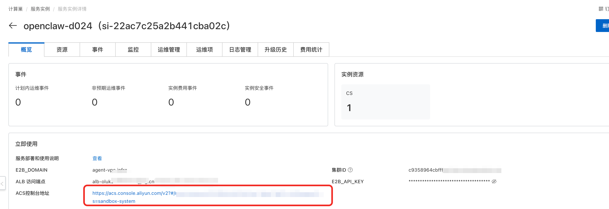
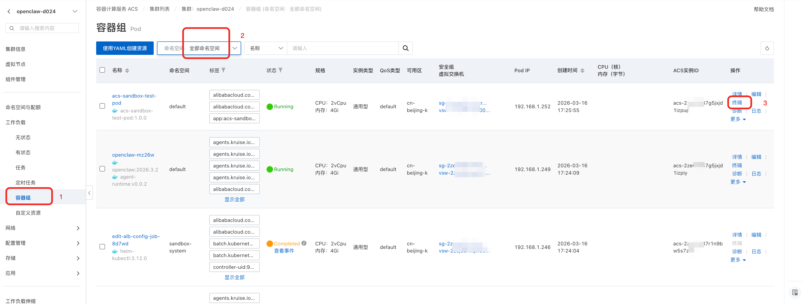
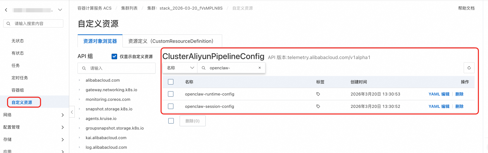
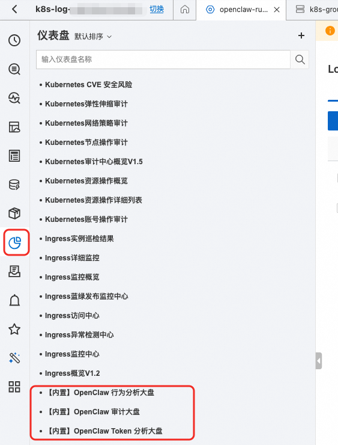

OpenClaw 企业版 - 生产级部署指南
本文档介绍 OpenClaw 企业版生产级部署方案，适用于对网络隔离、安全性、高可用有严格要求的企业客户。
方案概览
生产级部署基于 ACK 托管集群 + VirtualNode (ACS) 架构，支持 3 可用区高可用、Poseidon TrafficPolicy 网络隔离。
- 集群类型：ACK Pro 托管集群 + VirtualNode（Sandbox Pod 运行在 ACS 弹性算力上）
- 节点管理：ECS 节点池运行管控组件（sandbox-manager 等），Sandbox Pod 按需弹性
- 网络隔离：Poseidon TrafficPolicy + 安全组多层隔离
- 高可用：3 可用区部署，6 交换机（3 业务 + 3 OpenClaw 隔离）
网络架构
- 3 可用区：跨 AZ 高可用部署
- 6 交换机：3 个业务交换机 + 3 个 OpenClaw 隔离交换机
- 独立 NAT 网关：OpenClaw 沙箱使用独立 NAT 网关和 EIP 出公网
- ALB Ingress：通过 ALB 负载均衡器作为入口网关
- PrivateZone：VPC 内泛域名解析
网络隔离策略
生产级部署通过多层安全策略实现沙箱网络隔离：
第一层：企业级安全组 第二层：Poseidon TrafficPolicy - 通过 GlobalTrafficPolicy实现 Kubernetes 层面的精细化网络策略
第三层：独立 NAT 网关 - OpenClaw 沙箱使用独立的 NAT 网关和 EIP 出公网，与业务流量完全隔离
前置条件
- 拥有阿里云账号，并已完成实名认证
- 准备 TLS 证书文件（
fullchain.pem和privkey.pem），用于 E2B API 的 HTTPS 访问 - 给RAM 用户授权： 如果您使用的是RAM用户，需要授权RAM用户相关权限，才能够完成部署流程，参考授权文档 部署此服务需要的权限策略包括两个系统权限策略和一个自定义权限策略, 请联系有管理员权限的用户对RAM用户授予以下权限： 系统权限策略：
- AliyunComputeNestUserFullAccess：管理计算巢服务（ComputeNest）的用户侧权限，
- AliyunROSFullAccess：管理资源编排服务（ROS）的权限。 自定义权限策略：：policy_prod.json
开通服务
如果您之前没有使用过相关云服务，在部署时会提示您先开通服务和创建相应服务角色，如下图所示，

此步骤需要的权限相对风险较高(需要云产品的管理员权限)，推荐您选用以下两种方式进行开通： 注意：开通为一次性操作，仅第一次操作时需要开通。 1. 联系有管理员权限的用户打开计算巢服务部署链接，让管理员用户按照提示进行开通。 2. 联系有管理员权限的用户对RAM用户暂时授予管理员权限，RAM用户得到授权后进行开通，需要的权限策略如下。 开通服务权限策略：open_policy.json部署步骤
步骤 1：创建服务实例
- 登录 计算巢控制台
- 找到 OpenClaw-ACS-Sandbox集群版 服务
- 点击 创建服务实例
步骤 2：选择模板
在创建页面顶部，选择 生产环境 模板：
- 测试环境：双可用区，适合快速验证
- 生产环境：3 可用区高可用，网络隔离，适合正式使用（如果需要双可用区生产环境需求，可选择“生产环境-双可用区版”模版）
步骤 3：配置 VPC 与可用区
| 参数 | 说明 | 默认值 |
|---|---|---|
| 可用区 1/2/3 | 选择 3 个不同的可用区 | 根据地域选择 |
| 选择已有/新建的专有网络 | 新建或使用已有 VPC | 新建专有网络 |
| 专有网络 IPv4 网段 | VPC 主网段 | 192.168.0.0/16 |
步骤 4：配置管控交换机
为 3 个可用区分别配置业务交换机网段，用于集群节点和管控组件。如选择已有VPC，且该VPC带有附加网段，请用VPC主网段对应的VSWitch：
| 参数 | 说明 | 默认值 |
|---|---|---|
| 管控交换机子网网段 1 | 可用区 1 的网段 | 192.168.0.0/24 |
| 管控交换机子网网段 2 | 可用区 2 的网段 | 192.168.1.0/24 |
| 管控交换机子网网段 3 | 可用区 3 的网段 | 192.168.2.0/24 |
步骤 5：配置 OpenClaw 交换机
为 OpenClaw 沙箱配置独立的交换机，实现与业务网络的物理隔离：
| 参数 | 说明 | 默认值 |
|---|---|---|
| OpenClaw 专用交换机网段 1 | 可用区 1 的网段 | 192.168.120.0/24 |
| OpenClaw 专用交换机网段 2 | 可用区 2 的网段 | 192.168.121.0/24 |
| OpenClaw 专用交换机网段 3 | 可用区 3 的网段 | 192.168.122.0/24 |
OpenClaw交换机支持附加网段。 3 个 OpenClaw 交换机要求互不相同
步骤 6：配置集群参数
| 参数 | 说明 | 默认值 |
|---|---|---|
| Service CIDR | Kubernetes Service 网段 | 172.16.0.0/16 |
Service CIDR 不能与 VPC 网段和已有集群网段重复，创建后不可修改。
步骤 7：配置 Sandbox 参数
| 参数 | 说明 | 是否必填 | 默认值 |
|---|---|---|---|
| Sandbox 访问域名 | Sandbox API 的访问域名 | 有默认值 | agent-vpc.infra |
| TLS 证书 | fullchain.pem 证书文件 |
必填 | |
| TLS 证书密钥 | privkey.pem 私钥文件 |
必填 | |
| 是否配置内网域名解析 | 自动创建 PrivateZone | 建议开启 | true |
| PrivateZone 创建方式 | 新建或复用已有 PrivateZone（仅 ExistingVPC + 开启内网域名解析时显示）。若该 VPC 下已存在同名域名的 PrivateZone，模版会自动扫描出来，请选择"复用已有" | 默认新建 | 新建 |
| Sandbox API 访问密钥 | 访问 Sandbox 管理 API 的密钥 | 选填 | 自动生成 |
| Sandbox Manager CPU | sandbox-manager CPU 资源 | 默认即可 | 2 |
| Sandbox Manager 内存 | sandbox-manager 内存资源 | 默认即可 | 4Gi |
| Sandbox Manager 调度到虚拟节点 | 是否将 Sandbox Manager 调度到虚拟节点（ACS 模式），启用后 Sandbox Manager 将运行在 Serverless 虚拟节点上 | 默认开启 | true |
| 为 ALB 指定独立交换机 | 开启后可为 ALB 单独指定交换机，与集群节点交换机隔离（仅 ExistingVPC 场景生效） | 选填 | |
| ALB 交换机ID（可用区1） | ALB 在可用区 1 使用的专用交换机，须属于同一 VPC | 选填（开启独立交换机后必填） | |
| ALB 交换机ID（可用区2） | ALB 在可用区 2 使用的专用交换机，须属于同一 VPC | 选填（开启独立交换机后必填） |
步骤 8：配置 OpenClaw 参数
| 参数 | 说明 | 是否必填 |
|---|---|---|
| OpenClaw 部署命名空间 | SandboxSet（OpenClaw Pod）和 TestPod 所在的 Kubernetes 命名空间，sandbox-manager 固定部署在 sandbox-system 不受此参数影响 | 默认 default |
步骤 9：配置 CMS 可观测性（可选）
| 参数 | 说明 | 是否必填 |
|---|---|---|
| 启用 CMS 可观测性 | 开启后将自动接入阿里云云监控 2.0（ARMS APM），为 OpenClaw 沙箱提供链路追踪和性能监控能力 | 默认关闭 |
| CMS Workspace 名称 | 云监控 2.0 的工作空间名称，可在 ARMS 控制台 的环境管理中查看。系统会自动从该 Workspace 获取所需的 AuthToken 和 Project 信息，无需手动配置 | 开启 CMS 后必填 |
💡 说明：启用 CMS 可观测性后，系统会通过
DATASOURCE::CMS2::ServiceObservability自动查询 Workspace 的 EntryPointInfo（包括 AuthToken 和 Project），并注入到 OpenClaw 沙箱的启动脚本中，无需手动填写 ARMS 相关参数。
步骤 10：确认并创建
- 点击 下一步：确认订单
- 确认配置参数和费用
- 点击 创建 开始部署
部署预计耗时 15-22 分钟，请耐心等待。
部署验证
查看服务实例状态
部署完成后，在计算巢控制台的 服务实例 页面可以看到实例状态变为 已部署。
自动化测试 (无需配置本地环境和域名解析，可用于快速验证)
- 点击计算巢服务实例，找到实例内包含的ACK的集群。

- 点击集群容器组界面，找到acs-sandbox-test-pod，点击终端登录

-
测试创建OpenClaw 沙箱
-
配置以下环境变量，为OpenClaw配置GATEWAY_TOKEN 以及访问百炼的API_KEY,若不执行此步骤，将会使用默认值 GATEWAY_TOKEN的默认值为：clawdbot-mode-123456 DASHSCOPE_API_KEY的默认值为：sk-**** 国内百炼默认baseurl： https://dashscope.aliyuncs.com/compatible-mode/v1 国际站百炼默认baseurl: https://dashscope-intl.aliyuncs.com/compatible-mode/v1 该部分在openclaw_template.json中已配置
bash export GATEWAY_TOKEN=**** export DASHSCOPE_API_KEY=**** - 执行
python create_openclaw.py - 等待脚本完成，得到SandboxId，服务就绪后说明OpenClaw 启动成功，可以访问对应沙箱的OpenClaw Web UI
- 测试创建、休眠、唤醒Openclaw 沙箱
- 执行
python test_openclaw.py
- 执行
- 等待脚本验证所有功能通过，日志中出现 "创建 sandbox 耗时" 即代表验证通过
SandboxSet 配置
生产级 SandboxSet 配置示例：
apiVersion: agents.kruise.io/v1alpha1
kind: SandboxSet
metadata:
name: openclaw
namespace: ${SandboxNamespace}
spec:
persistentContents:
- filesystem
replicas: ${OpenClawReplicas}
runtimes:
- name: agent-runtime
template:
metadata:
labels:
app: openclaw
alibabacloud.com/acs: "true"
annotations:
image.alibabacloud.com/enable-image-cache: "true"
network.alibabacloud.com/vswitch-ids: "${OpenClawVSwitchId1},${OpenClawVSwitchId2},${OpenClawVSwitchId3}"
network.alibabacloud.com/security-group-ids: "${OpenClawIsolationSecurityGroupId}"
network.alibabacloud.com/network-policy-mode: "traffic-policy"
network.alibabacloud.com/enable-network-policy-agent: "true"
spec:
automountServiceAccountToken: false
enableServiceLinks: false
hostNetwork: false
hostPID: false
hostIPC: false
shareProcessNamespace: false
hostname: openclaw
containers:
- name: gateway
image: registry-${RegionId}-vpc.ack.aliyuncs.com/ack-demo/openclaw:2026.3.23-2
securityContext:
readOnlyRootFilesystem: false
runAsUser: 1000
runAsGroup: 1000
command: ["bash", "-c"]
args:
- "exec node openclaw.mjs gateway run --allow-unconfigured"
ports:
- name: gateway
containerPort: 18789
protocol: TCP
- name: runtime
containerPort: 49983
protocol: TCP
env:
- name: OPENCLAW_CONFIG_DIR
value: /home/node/.openclaw/openclaw.json
- name: KUBERNETES_SERVICE_PORT_HTTPS
value: ""
- name: KUBERNETES_SERVICE_PORT
value: ""
- name: KUBERNETES_PORT_443_TCP
value: ""
- name: KUBERNETES_PORT_443_TCP_PROTO
value: ""
- name: KUBERNETES_PORT_443_TCP_ADDR
value: ""
- name: KUBERNETES_SERVICE_HOST
value: ""
- name: KUBERNETES_PORT
value: ""
- name: KUBERNETES_PORT_443_TCP_PORT
value: ""
resources:
requests:
cpu: 2
memory: 4Gi
limits:
cpu: 2
memory: 4Gi
startupProbe:
exec:
command:
- node
- -e
- "require('http').get('http://127.0.0.1:18789/healthz', r => process.exit(r.statusCode < 400 ? 0 : 1)).on('error', () => process.exit(1))"
initialDelaySeconds: 1
periodSeconds: 2
failureThreshold: 150
重要字段说明
SandboxSet.spec.persistentContents: filesystem— 在 pause/connect 的过程中只保留文件系统template.spec.automountServiceAccountToken: false— Pod 不挂载 Service Accounttemplate.spec.enableServiceLinks: false— Pod 不注入 Service 环境变量template.metadata.labels.alibabacloud.com/acs: "true"— 使用 ACS 算力template.metadata.annotations.ops.alibabacloud.com/pause-enabled: "true"— 支持 pause/connect 动作template.metadata.annotations.network.alibabacloud.com/enable-network-policy-agent: "true"— 启用网络策略 Agenttemplate.metadata.annotations.network.alibabacloud.com/network-policy-mode: "traffic-policy"— 使用 Poseidon TrafficPolicy 模式实现网络隔离
⚠️ 如果预期使用 Pause，一定不要设置 liveness/readiness 的探针，避免在暂停期间的健康检查问题。
必要的修改
registry-cn-hangzhou.ack.aliyuncs.com/ack-demo/openclaw:2026.3.23-2— 替换为客户自己构建的镜像
机制简要说明
通过在 Pod 启动 envd，来支持 E2B SDK 的服务端接口。通过 kubectl 创建上述资源，SandboxSet 创建完成后，可以看到沙箱已经处于可用状态。
访问 OpenClaw Web UI
配置域名解析
方式一：DNS 解析（生产环境）
- 获取 ALB 访问端点
- 在 DNS 服务商处，将 ALB 端点以 CNAME 记录解析到对应域名
- 如需内网访问，可通过 PrivateZone 添加内网域名解析
方式二：本地 Host 配置（需开启ALB公网访问，仅用于临时快速验证）
- 获取 ALB 访问端点：在服务实例详情页查看 ALB 域名
- 通过
ping或dig获取 ALB 公网 IP - 配置
/etc/hosts：
sudo vim /etc/hosts
# 添加以下内容（替换为实际的 ALB IP 和 Pod 名称）
39.103.89.43 18789-default--openclaw-abc12.agent-vpc.infra
39.103.89.43 api.agent-vpc.infra
域名格式
OpenClaw 沙箱通过 PrivateZone 泛域名解析 + ALB 路由实现访问，域名格式为：
<port>-<namespace>--<pod-name>.<e2b-domain>?token=<gateway-token>
↑↑
双连字符（重要！）
参数说明：
- port：OpenClaw Web UI 端口，固定为 18789
- namespace：Pod 所在命名空间，默认为 default
- pod-name：Sandbox Pod 名称，如 openclaw-abc12
- e2b-domain：部署时配置的 E2B 域名
- gateway-token：SandboxSet 中配置的 GATEWAY_TOKEN 值
示例 URL：
https://18789-default--openclaw-abc12.agent-vpc.infra?token=clawdbot-mode-123456
⚠️ namespace 和 pod-name 之间必须使用双连字符
--，使用单连字符会导致 502 错误。
获取 Sandbox Pod 名称
kubectl get pods -n default -l app=openclaw
使用沙箱Demo
可在集群的default命名空间的acs-sandbox-test-pod中执行相关demo测试
通过 Python SDK 创建
- 安装 E2B Python SDK
pip install e2b-code-interpreter
- 初始化客户端运行环境配置
export E2B_DOMAIN=your.domain
export E2B_API_KEY=your-token
# 如果使用了自签名证书，还需要配置可信CA证书
export SSL_CERT_FILE=/path/to/ca-fullchain.pem
创建沙箱并配置用户信息
为用户配置的OpenClaw的GATEWAY_TOKEN 以及访问百炼的API_KEY,
bash
export GATEWAY_TOKEN=****
export DASHSCOPE_API_KEY=****
为用户申请 Sandbox，并在 Sandbox 中配置个人信息。以下代码会读取acs-sandbox-test-pod中的 openclaw_template.json 配置模板，注入用户独立的 token 和 LLM 鉴权信息。
示例模版也可参考
{
"agents": {
"defaults": {
"model": {
"primary": "bailian/qwen3.5-plus"
},
"workspace": "/root/.openclaw/workspace"
}
},
"models": {
"mode": "merge",
"providers": {
"bailian": {
"baseUrl": "https://dashscope.aliyuncs.com/compatible-mode/v1",
"apiKey": "${DASHSCOPE_API_KEY}",
"api": "openai-completions",
"models": [
{
"id": "qwen3.5-plus",
"name": "通义千问",
"input": [
"text"
],
"contextWindow": 1000000,
"maxTokens": 65536
}
]
}
}
},
"commands": {
"native": "auto",
"nativeSkills": "auto",
"restart": true,
"ownerDisplay": "raw"
},
"gateway": {
"port": 18789,
"bind": "lan",
"controlUi": {
"allowedOrigins": [
"*"
],
"dangerouslyAllowHostHeaderOriginFallback": true,
"allowInsecureAuth": true,
"dangerouslyDisableDeviceAuth": true
},
"auth": {
"mode": "token",
"token": "${GATEWAY_TOKEN}"
}
}
}
# Import and patch the E2B SDK
import os
import requests
from string import Template
from e2b_code_interpreter import Sandbox
# 注意为用户配置 never timeout
sbx: Sandbox = Sandbox.create(template="openclaw-sbs", metadata={
"e2b.agents.kruise.io/never-timeout": "true"
})
print(f"sandbox id: {sbx.sandbox_id}")
# 基于环境变量中的 GATEWAY_TOKEN, DASHSCOPE_API_KEY, EXTERNAL_ACCESS_DOMAIN 读取
GATEWAY_TOKEN = os.environ.get("GATEWAY_TOKEN", "clawdbot-mode-123456")
DASHSCOPE_API_KEY = os.environ.get("DASHSCOPE_API_KEY", "sk-****")
#渲染 openclaw-template.json 文件， 并将渲染后的文件覆盖沙盒中 /home/node/.openclaw/openclaw.json 的内容，触发openclaw重启更新配置
template_path = "openclaw_template.json"
with open(template_path, "r") as f:
template_content = f.read()
rendered_content = Template(template_content).safe_substitute(
GATEWAY_TOKEN=GATEWAY_TOKEN,
DASHSCOPE_API_KEY=DASHSCOPE_API_KEY,
)
sbx.files.write("/home/node/.openclaw/openclaw.json", rendered_content, user="node")
print("已将渲染后的配置写入沙盒 /home/node/.openclaw/openclaw.json")
print(f"sandbox: {sbx}")
print(f"sandbox id: {sbx.sandbox_id}")
执行代码可以得到创建后返回的Sandbox对象，获取新创建Sandbox对象的详细信息
print(f"sandbox: {sbx}")
print(f"sandbox id: {sbx.sandbox_id}")
> 创建后返回的 Sandbox 对象中包含新创建 Sandbox 的详细信息。sandbox id 的命名格式为 `{Namespace}--{Sandbox Name}`，其中 `--` 之前为对应资源所处的 K8s 命名空间，之后为 Sandbox 的名称。
休眠与唤醒
可参考官方文档使用：https://help.aliyun.com/zh/cs/user-guide/hibernate-and-wake-up-the-agent-sandbox
沙箱休眠成功后，沙箱的状态会变成休眠状态，对应的 Pod 也会消失。注意沙箱实例休眠期间，OpenClaw 服务将处于不可访问状态。
网络隔离详解
TrafficPolicy
TrafficPolicy 用于控制ACK集群中 Agent 类应用的网络访问。TrafficPolicy可以基于优先级实现多级网络策略，支持 CIDR、Service、FQDN 等多种匹配方式，精细管理 Pod 出入方向流量。
请参考官方文档：使用 TrafficPolicy 管理 Agent 网络访问
企业安全组说明
OpenClaw 安全组用于控制 Sandbox Pod 的网络访问边界，需按以下网段分类理解：
网段分类说明
| 网段类型 | 默认网段 | 对应模板参数 | 说明 |
|---|---|---|---|
| 管控网段 | 192.168.0.0/24、192.168.1.0/24、192.168.2.0/24 |
管控交换机子网网段 1/2/3 | 集群管控面 / 其他服务使用的交换机网段，sandbox-manager 默认部署在此网段下 |
| OpenClaw 网段 | 192.168.120.0/24、192.168.121.0/24、192.168.122.0/24 |
OpenClaw 专用交换机网段 1/2/3 | Agent Sandbox 所在的隔离交换机网段，需要拒绝以防止沙箱间互访 |
| VPC 网段 | 192.168.0.0/16 |
专有网络 IPv4 网段 | VPC 主网段，管控网段和 OpenClaw 网段均属于此范围 |
| 云产品网段 | 100.64.0.0/10 |
- | 阿里云内部云产品通信网段 |
| DNS 服务地址 | 100.100.2.136、100.100.2.138 |
- | 阿里云 DNS 服务地址 |
| 私网网段 | 192.168.0.0/16、172.16.0.0/12、10.0.0.0/8 |
- | RFC 1918 私网地址段，默认拒绝以实现网络隔离 |
| 公网 | 0.0.0.0/0 |
- | 公网出口，低优先级放行 |
组内连通策略
- 组内隔离（Sandbox 之间不互通）
入方向规则
| 优先级 | 动作 | 源 IP 段 | 网段类型 | 端口 | 协议 | 说明 |
|---|---|---|---|---|---|---|
| 高 | 允许 | 192.168.0.0/24、192.168.1.0/24、192.168.2.0/24 |
管控网段 | 全部 | 所有 | sandbox-manager 等管控组件访问 Sandbox |
| - | - | - | - | - | - | 可按需添加应用或组件期望访问/拒绝的端口规则 |
出方向规则
| 优先级 | 动作 | 目标 IP 段 | 网段类型 | 端口 | 协议 | 说明 |
|---|---|---|---|---|---|---|
| 高 | 允许 | 100.64.0.0/10 |
云产品网段 | 不限制 | 所有 | 访问阿里云内部云产品 |
| 高 | 允许 | 192.168.0.0/24、192.168.1.0/24、192.168.2.0/24 |
管控网段 | 443、6443（API Server）、9082（Poseidon） | TCP | 访问集群 API Server 和 Poseidon |
| 高 | 允许 | 192.168.0.0/24、192.168.1.0/24、192.168.2.0/24 |
管控网段 | 53（DNS） | 所有 | 集群内 DNS 解析 |
| 高 | 允许 | 100.100.2.136、100.100.2.138 |
DNS 服务地址 | 53（DNS） | 所有 | 阿里云 DNS 服务 |
| 高 | 拒绝 | 192.168.120.0/24、192.168.121.0/24、192.168.122.0/24 |
OpenClaw 网段 | 全部 | 所有 | 禁止沙箱间互访，实现网络隔离 |
| 中 | 拒绝 | 192.168.0.0/16、172.16.0.0/12、10.0.0.0/8 |
私网网段 | 全部 | 所有 | 拒绝访问其他私网资源 |
| 低 | 允许 | 0.0.0.0/0 |
公网 | 全部 | 所有 | 放行公网出口（如访问外部 API） |
| - | 允许 | 192.168.0.0/24、192.168.1.0/24、192.168.2.0/24 |
管控网段 | 按需 | 按需 | 可选：访问集群内非 Agent 服务（如 LLM Server） |
注意：以上网段均为默认值（对应步骤 4、5 中的默认参数），如部署时修改了交换机网段，安全组规则中的 IP 段需同步调整。
模板参数与网络隔离概念速查表
| 模板参数 | 对应概念 | 用途 |
|---|---|---|
VpcCidrBlock |
VPC 主网段 | 安全组规则、TrafficPolicy egress allow（API Server/Poseidon） |
VSwitchCidrBlock1/2/3 |
vsw-downstream（业务交换机） | sandbox-manager、ALB、ECS 节点所在网段 |
OpenClawVSwitchCidrBlock1/2/3 |
vsw-openclaw（隔离交换机） | Sandbox Pod 实际运行的网段 |
OpenClawCidrBlock |
vsw-openclaw 汇总网段 | GlobalTrafficPolicy deny 规则、安全组规则 |
ServiceCidr |
K8s Service 网段 | kube-dns、API Server ClusterIP |
OpenClawIsolationSecurityGroup |
隔离安全组（enterprise） | Sandbox Pod 专用，Pod 间默认不互通 |
OpenClawNatGateway + OpenClawNatEip |
upstream（独立 NAT） | Sandbox Pod 出公网流量隔离 |
OpenClawRouteTable |
独立路由表 | OpenClaw 交换机默认路由指向独立 NAT |
OpenClawPodNetworking |
PodNetworking CRD | 将 Pod 调度到隔离交换机 + 绑定隔离安全组 |
GlobalTrafficPolicyApplication |
GlobalTrafficPolicy | 全局拒绝 OpenClaw 网段入站 |
OpenClawTrafficPolicyApplication |
TrafficPolicy | OpenClaw Pod 精细化 ingress/egress 控制 |
可观测能力
OpenClaw 日志
SLS k8s原生能力在ACK集群内通过 loongcollector 组件提供，通过CR的方式创建采集配置，对应的CRD资源名为ClusterAliyunPipelineConfig。

SLS提供开箱即用的OpenClaw采集配置，可以通过SLS控制台访问OpenClaw日志，对应的SLS的Project为k8s-log-${ack集群id}, - OpenClaw Runtime日志（网关 / 应用） - 对应的 logstore 为 openclaw-runtime - 对应的采集配置为 openclaw-runtime-config - 对应的K8s集群中的CR名为 openclaw-runtime-config - OpenClaw Session 审计日志 - 对应的 logstore 为 openclaw-session - 对应的采集配置为 openclaw-session-config - 对应的K8s集群中的CR名为 openclaw-session-config
针对OpenClaw日志，SLS内置仪表盘覆盖安全审计、成本分析、行为分析三个维度: - OpenClaw 行为分析大盘: 对 OpenClaw 的运行行为进行全量记录与分类统计 - OpenClaw 审计大盘: 从行为总览、高危命令、提示词注入、数据外泄等维度展开，提供实时行为监控、威胁识别与事后溯源的完整能力 - OpenClaw Token 分析大盘: 从整体概览、模型维度趋势、会话等维度展开，提供用量监控、成本分析与异常发现能力

注意： 内置采集配置仅针对demo镜像，自定义镜像的日志路径、容器过滤条件等可能有所不同，可以在ACK集群内通过修改对应的CR进行配置修正。
时间预估
预估 20 分钟左右
常见问题
部署失败如何排查？
- 在计算巢服务实例详情页查看部署日志
- 进入 ROS 控制台查看 Stack 事件，找到第一个
CREATE_FAILED事件 - 根据
StatusReason定位根因
kubeconfig 无法连接？
如果获取的 kubeconfig 使用内网 IP 无法连接，需要为集群绑定 EIP 或使用 VPN 访问。
Pod 启动慢？
SandboxSet 首次启动需要拉取镜像，约需 2-3 分钟。可通过以下命令查看进度：
kubectl describe pod -l app=openclaw -n default